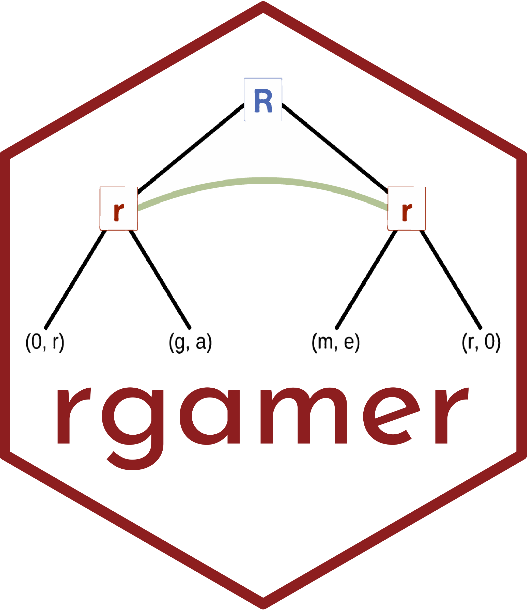
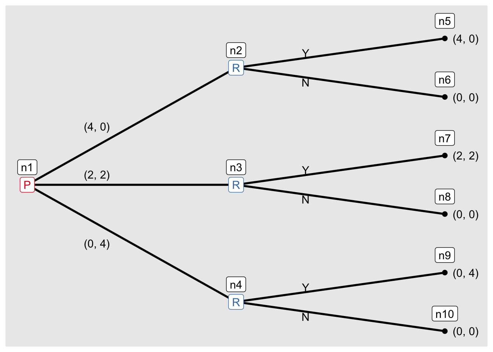

rgamer の紹介
上條良夫（早稲田大学）
矢内勇生（高知工科大学）
2023-01-14
rgamer とは
rgamer とは、学習・教育・研究目的でゲーム理論を使用する人たちのために作られた R のパッケージである。 rgamer を使えば、ゲームを自動的に解析・可視化することが可能になる。 このサイトでは、rgamer の機能と使い方について簡単に紹介する。 詳細については、我々が執筆した「R で学ぶゲーム理論」（朝倉書店）か、あるいはパッケージのヘルプページから確認してほしい。

rgamer のインストール方法
rgamer を github
からインストールするために、まずパッケージ remotes
をインストールする。
install.packages("remotes")続けて、以下のコードを実行すれば rgamer
がインストールできる。
remotes::install_github("yukiyanai/rgamer")
使用方法
rgamer を利用するためには、まず rgamer
を読み込む必要がある。
library(rgamer)これで rgamer を使用可能である。
標準形ゲーム
試しに、囚人のジレンマゲームを分析してみる。
ゲームを定義
まずはゲーム（囚人のジレンマゲーム）を定義する。
g1 <- normal_form(
players = c("player 1", "player 2"),
s1 = c("C", "D"),
s2 = c("C", "D"),
payoffs1 = c(4, 5, 1, 2),
payoffs2 = c(4, 1, 5, 2),
)利得表を表示
g1_sol <- solve_nfg(g1)|
player 2
|
|||
|---|---|---|---|
| strategy | C | D | |
| player 1 | C | 4, 4 | 1, 5^ |
| D | 5^, 1 | 2^, 2^ | |
NE を表示!
g1_sol$psNE## [1] "[D, D]"混合戦略まで考えて最適反応を図示
g1_sol$br_plot展開形ゲーム
ゲームの木を表示する
展開形ゲームを定義する方法はいくつか用意されている。 まずは簡単な方法を紹介する。 標準形ゲームで使用した囚人のジレンマゲームを、player 1 (P1) が先手、player 2 (P2) が後手として、プレイされる状況を考える。
g2 <- seq_form(
players = c("P1", "P2"),
s1 = c("C", "D"),
s2 = c("C", "D"),
payoffs1 = c(4, 5, 1, 2),
payoffs2 = c(4, 1, 5, 2),
)
g3 <- seq_extensive(g2)ゲームの木の向きを右向きに変える。
g3 <- seq_extensive(g2, direction = "right")バックワードインダクション
バックワードインダクションで戦略の組を求める。
g3_sol <- solve_efg(g3)
g3_sol$trees## [[1]]
より一般的な定義の仕方
mini 最後通牒ゲームを展開形ゲームとして定義する。
最初に先手(P)が資源(4)の分配案を
- (P の取り分、R の取り分) = (4, 0), 完全に利己的
- (P の取り分、R の取り分) = (2, 2), 平等
- (P の取り分、R の取り分) = (0, 4), 完全に利他的
から選択し、後手(R)が受け入れる(Y)か拒否する(N)かを選択する。
g4 <- extensive_form(
players = list("P", # n1
rep("R", 3), # n2 - n4
rep(NA, 6) # n5 - n10
),
actions = list(c("(4, 0)", "(2, 2)","(0, 4)"), # n1: P
c("Y", "N"), ## n2: R
c("Y", "N"), ## n3: R
c("Y", "N") ## n4: R
),
payoffs = list(P = c(4, 0, 2, 0, 0, 0),
R = c(0, 0, 2, 0, 4, 0)),
direction = "right",
show_tree = TRUE,
)
バックワードインダクションを実行する。
g4_sol <- solve_efg(g4)
library(patchwork)
plot(g4_sol$trees[[1]] / g4_sol$trees[[2]])
これより、先手が利己的（自分に全部）な提案する場合も、先手が平等な提案をする場合も、どちらもあり得ることがわかる。
標準形への変換
先ほどの展開形ゲームを標準形に変換する。
g4_m <- to_matrix(g4)
g4_m_sol <- solve_nfg(g4_m) |
R
|
|||||||||
|---|---|---|---|---|---|---|---|---|---|
| strategy | (Y, Y, Y) | (Y, Y, N) | (Y, N, Y) | (Y, N, N) | (N, Y, Y) | (N, Y, N) | (N, N, Y) | (N, N, N) | |
| P | ((4, 0)) | 4^, 0^ | 4^, 0^ | 4^, 0^ | 4^, 0^ | 0, 0^ | 0, 0^ | 0^, 0^ | 0^, 0^ |
| ((2, 2)) | 2, 2^ | 2, 2^ | 0, 0 | 0, 0 | 2^, 2^ | 2^, 2^ | 0^, 0 | 0^, 0 | |
| ((0, 4)) | 0, 4^ | 0, 0 | 0, 4^ | 0, 0 | 0, 4^ | 0, 0 | 0^, 4^ | 0^, 0 | |
当然、NE を求めることができる。
g4_m_sol$psNE## [1] "[((4, 0)), (Y, Y, Y)]" "[((4, 0)), (Y, Y, N)]" "[((4, 0)), (Y, N, Y)]"
## [4] "[((4, 0)), (Y, N, N)]" "[((2, 2)), (N, Y, Y)]" "[((2, 2)), (N, Y, N)]"
## [7] "[((4, 0)), (N, N, Y)]" "[((0, 4)), (N, N, Y)]" "[((4, 0)), (N, N, N)]"
マッチング
ボストン方式
m_boston <- matching(
g1_names = c("M1", "M2"),
g1_prefs = list(c("W1", "W2", "W3"),
c("W2", "W1", "W3")),
g2_names = c("W1", "W2", "W3"),
g2_prefs = list(c("M2", "M1"),
c("M2", "M1"),
c("M1", "M2")),
algorithm = "Boston",
switch = TRUE,
verbose = TRUE
)## Step 1
## W3 proposes M1
## M1 accepts W3
##
## W1, W2 propose M2
## M2 accepts W2print(m_boston)## Results
## W3 : M1
## W2 : M2
## W1 : NADA 方式
m_da <- matching(
g1_names = c("M1", "M2"),
g1_prefs = list(c("W1", "W2", "W3"),
c("W2", "W1", "W3")),
g2_names = c("W1", "W2", "W3"),
g2_prefs = list(c("M2", "M1"),
c("M2", "M1"),
c("M1", "M2")),
algorithm = "DA",
switch = TRUE,
verbose = TRUE
)## Step 1
## W1 proposes M2
## W1 and M2 temporarily match
##
## W2 proposes M2
## M2 rejects W1
## W2 and M2 temporarily match
##
## W3 proposes M1
## W3 and M1 temporarily match
##
## Step 2
## W1 proposes M1
## M1 rejects W3
## W1 and M1 temporarily match
##
## W3 proposes M2
## M2 rejects W3
## print(m_da)## Results
## W1 : M1
## W2 : M2
## W3 : NA安定性
is_stable(m_boston)## $stable
## [1] FALSE
##
## $blocking_pairs
## proposer proposed proposer_current proposer_better proposed_current
## 1 W1 M1 NA 2 3
## proposed_better
## 1 1is_stable(m_da)## $stable
## [1] TRUE
##
## $blocking_pairs
## NULLつまり、今回の選好リストにおいては、DA 方式は安定な結果を返しているが、 ボストン方式の結果は安定ではない。 (W1, M1) がブロッキングペアである。
Enjoy with rgamer!!!